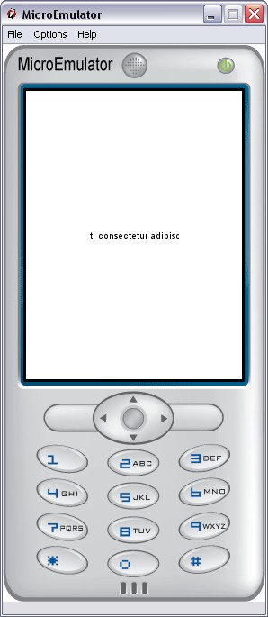

Ticker prototype

Introduction
Text looping animation.
Animation can be either horizontal or vertical, and will only start if text is larger than the size of the Ticker.
Note:
Text alignment (with CSS vertical-align and horizontal-align properties) is relative to the size of the Ticker.
Limitation:
BASELINE is not supported for vertical alignment (MIDDLE will be used).
Interface
Fields description
Data fields
- MFString string - Text content
- SFVec2f size - Content box size.
Style fields
- SFVec2f textScale - Used for scaling text if necessary (phone with small fonts)
- MFString style - Path to the CSS node associated to Ticker prototype
Warning:
Define style is required (we can use the default style - see
Style node).
Control fields
- SFInt32 speed - Speed of animation (pixels per second). Animation can be stopped with a value less or equal to 0. Default: 50
- SFBool cycle - If TRUE, text will cycle, if FALSE, text will bounce. Default: FALSE
- SFBool vertical - If TRUE, animation will be vertical and text is wrapped to the size of the ticker. Default: FALSE
- SFInt32 maxLines - Max number of lines to display in vertical mode, 0 for no limit. Default: 0
CSS
Example